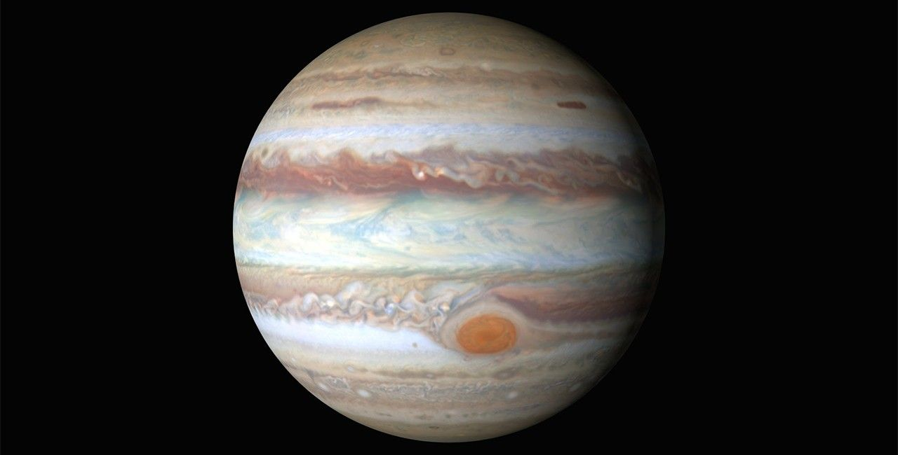

Jupiter is the largest planet in the solar system, more than twice as massive as all the other planets combined. This gas giant is primarily composed of hydrogen and helium, with no solid surface. Its swirling cloud bands and the iconic Great Red Spot, a giant storm, define its stunning appearance.
It has at least 95 known moons, including four large Galilean moons: Io, Europa, Ganymede, and Callisto. Ganymede is the largest moon in the solar system, even bigger than Mercury.
Jupiter has a powerful magnetic field and a faint ring system composed mostly of dust. It completes a rotation in just under 10 hours, making it the fastest-spinning planet.
Robotic missions such as Pioneer, Voyager, Galileo, Juno, and future missions like JUICE continue to reveal secrets about its composition, weather, and moons.
| Feature | Details |
|---|---|
| Diameter | 139,820 km (86,881 miles) |
| Distance from Sun | 778.5 million km (484 million miles) |
| Orbital Period | 11.86 Earth years |
| Rotation Period | 9.9 hours |
| Atmosphere | Hydrogen, Helium |
| Moons | 95 (and counting) |
| Rings | Yes (faint) |
| Great Red Spot | Giant storm over 300 years old |
| Magnetic Field | Strongest of all planets |
| First Spacecraft Visit | Pioneer 10 (1973) |
| Current Mission | Juno |